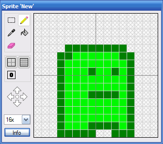

Making a character that can jump
This tutorial will show you how you can create a character that can jump. We will create a simple background with a level "ground" and allow the player to move left and right along this ground. When the up-arrow is pressed, the player will jump up and then be pulled back down to the ground by our simulated gravity.
This tutorial has been tested with devkitARM release 26 and Spritely version 0.19.20 beta and verified to work for both GBA and NDS projects.
Step 1 : Create a new project
Create a new project: c:\gamedev\projects\jump.
Step 2 : Create a sprite
Create a sprite for player. Make sure that the image touches the bottom of the sprite so that we can easily align the player on the ground that we're going to create.

Step 3 : Create a background with a level ground
Take the default background sprite and fill it with an appropriate sky color.
Add a new 1x1 background tile and fill it with a ground color. Draw this tile onto the bottom part of the background map to form a solid horizontal ground.
Step 4 : Save/Export/Build project
Save, export, build and run the ROM. The player sprite will appear floating up in the upper left corner. We need to change its initial position so that it starts out on the ground level.
Step 5 : Move the player so that it starts at ground level
To do this, we need to figure out:
- Where is the "ground level" on the screen
- How tall is the player sprite
In game_state.h, find the following code:
game_state.h — Lines 39 - 41:
// The (x,y) location of the object representing the player. int _xPlayer, _yPlayer; };
This code stores the player's location. Add the following lines to make space to store the player height and ground level:
game_state.h — Lines 39 - 47:
// The (x,y) location of the object representing the player. int _xPlayer, _yPlayer; // Height of the player sprite. int _yPlayerHeight; // The y-coord of ground level. int _yGroundLevel; };
To initialize these values, go to the initialize code in game_state.cpp:
game_state.cpp — Lines 48 - 54:
// Initialize the objects for the first level. InitObject(kObj_Player, 0); // Set the initial location of each object. _xPlayer = 0; _yPlayer = 0; MoveObjectTo(kObj_Player, _xPlayer, _yPlayer);
and make the following changes:
game_state.cpp — Lines 48 - 58:
// Initialize the objects for the first level. InitObject(kObj_Player, 0); // Calculate the ground level. _yPlayerHeight = GetObjectHeight(kObj_Player); _yGroundLevel = 128; // Set the initial location of each object. _xPlayer = 0; _yPlayer = _yGroundLevel - _yPlayerHeight; MoveObjectTo(kObj_Player, _xPlayer, _yPlayer);
Now you can build and run to see impact of your changes.
If you drew your ground at a different level, you may have to change 128 as appropriate.
Step 6 : Disable the up/down arrow buttons
By default, the game the Spritely creates allows you to move the player in all 4 directions: up, down, right and left. Since we want to restrict the player to moving left and right only, we need to disable the support for moving up and down.
In game_state.cpp, find:
game_state.cpp — Lines 77 - 89:
// The arrow keys are used to move the current object. // We use CheckKeyHeld() because we want the action to repeat as long // as the player is holding down the button. int dx = 0; int dy = 0; if (CheckKeyHeld(KEY_LEFT)) dx = -1; if (CheckKeyHeld(KEY_RIGHT)) dx = 1; if (CheckKeyHeld(KEY_UP)) dy = -1; if (CheckKeyHeld(KEY_DOWN)) dy = 1;
and remove the 4 lines that handle KEY_UP and KEY_DOWN.
If you build and run now, the player will only be able to move left and right.
Step 7 : Initial attempt at a jump
We want the player to jump when we press the up arrow, so let's add support for that.
In game_state.cpp, find the code that handles the left and right arrows and add the following code:
game_state.cpp — Lines 87 - 97:
// Handle the player pressing the 'A' button. // We use CheckKeyPress() because we *don't* want the action to repeat // unless the player presses the 'A' button multiple times. if (CheckKeyPress(KEY_A)) { // ToDo: Add code to respond to 'A' button press here. } // Handle the player jump. if (CheckKeyPress(KEY_UP)) { dy = 10; }
If you run your game now, it's doesn't quite work the way we want - the player jumps up 10 pixels and then hovers above the ground. Jumping again has the player going up even higher. If you keep going, the player can jump off the top of the screen.
The problem is the we're simply adjusting the y-position of the player and not keeping track of the player's velocity. We'll fix that in the next step.
Step 8 : Keeping track of velocity
If we want to keep track of the player's velocity, we'll need a place to store the current velocity value.
We define this storage space in game_state.h. Add 2 new values to the GameState class:
game_state.h — Lines 39 - 53:
// The (x,y) location of the object representing the player. int _xPlayer, _yPlayer; // Height of the player sprite. int _yPlayerHeight; // The y-coord of ground level. int _yGroundLevel; // Is the player currently jumping? bool _isjumping; // Current jump velocity. int _yVelocity; };
These values keep track of the velocity (only in the y-direction since we're only concerned about vertical jumps) and also whether or not the player is currently jumping.
Whenever we add new variables, we need to initialize them. Go to game_state.cpp and add the following lines.
game_state.cpp — Lines 48 - 64:
// Initialize the objects for the first level. InitObject(kObj_Player, 0); // Calculate the ground level. _yPlayerHeight = GetObjectHeight(kObj_Player); _yGroundLevel = 128; // Set the initial location of each object. _xPlayer = 0; _yPlayer = _yGroundLevel - _yPlayerHeight; MoveObjectTo(kObj_Player, _xPlayer, _yPlayer); _isjumping = false; _yVelocity = 0; // TODO: Add more initialization for level 1 here. }
Now we just need to adjust our jumping code. Find:
game_state.cpp — Lines 97 - 100:
// Handle the player jump.
if (CheckKeyPress(KEY_UP)) {
dy = 10;
}
and change it to:
game_state.cpp — Lines 97 - 102:
// Handle the player jump. if (CheckKeyPress(KEY_UP)) { _yVelocity = 10; _isjumping = true; } dy = -_yVelocity;
This code sets the player's upward velocity to 10 and sets the _isjumping boolean to record that the player is in the middle of a jump.
Now if you build and run, the player should jump up. But it keeps going up and flies off the top of the screen. The problem is that we've given the player a velocity (up) but we have nothing that pulls the player back down to the ground. On Earth, that problem is solved by using gravity, so let's add some gravity to our game world.
Step 9 : Adding gravity
Near the end of game_state.cpp add the following block of code after the code to move the player:
game_state.cpp — Lines 104 - 127:
// If we need to move the player. if (dx != 0 || dy != 0) { // Record the player's new location. _xPlayer += dx; _yPlayer += dy; // Move the player to the new location. MoveObjectTo(kObj_Player, _xPlayer, _yPlayer); } // If the player is above ground, apply gravity. if (_yPlayer + _yPlayerHeight < _yGroundLevel) { // Apply gravity by reducing upward velocity. _yVelocity--; } else { // Player is on the ground, so stop jumping. _yVelocity = 0; _isjumping = false; // Force player to be exactly at ground level. _yPlayer = _yGroundLevel - _yPlayerHeight; MoveObjectTo(kObj_Player, _xPlayer, _yPlayer); } // TODO: Add additional game state updates for level 1 here. }
This code checks to see if the player is above the ground level and, if so, it applies gravity using _yVelocity--;. This code reduces the upward velocity by 1 until the player comes back to the ground.
Once the player reaches the ground we set the velocity to 0 and record that the player is no longer jumping (so that they can jump again). We also force the player to be at ground level because mid-air jumps can make the player mis-aligned and have them try to go below ground level.
This "time-lapse" screenshot shows the path that the player takes when moving to the right while jumping.
Step 10 : Disable mid-air jumps
We can disable mid-air jumps by changing:
game_state.cpp — Lines 97 - 98:
// Handle the player jump.
if (CheckKeyPress(KEY_UP)) {
to:
game_state.cpp — Lines 97 - 98:
// Handle the player jump. if (CheckKeyPress(KEY_UP) && !_isjumping) {
Finished!
Now that we've added gravity, we're done. But we can make additional modifications if we want.
We can can adjust the height of the jump by changing the initial velocity.
game_state.cpp — Lines 97 - 101:
// Handle the player jump.
if (CheckKeyPress(KEY_UP) && !_isjumping) {
_yVelocity = 10;
_isjumping = true;
}
Links to completed project
GBA:
NDS: